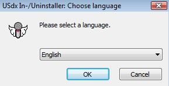
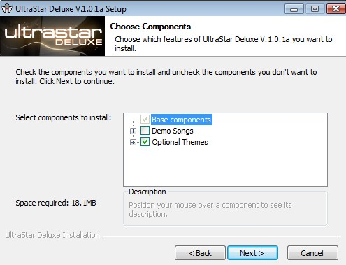
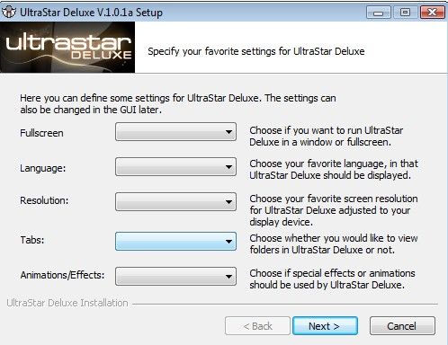
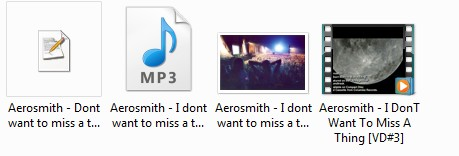
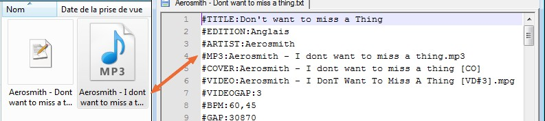

Ne vous inquiétez pas, je ne vous prends pas pour des imbéciles mais comme le principe du site est de tout expliquer à partir de zéro, on explique tout à partir de zéro. Donc pour revenir à la question, un karaoké est une façon divertissante de chanter, habituellement en suivant les paroles sur un écran (magnifique définition que j'ai trouvée sur Wikipédia). Pour plus de renseignements sur les karaokés
À quoi sert ce cours ?
Tout simplement, je répondrai que ce cours est destiné aux personnes qui veulent :
animer des karaokés ;
créer leurs propres karaokés.
Vous pourrez donc créer autant de chansons que vous voudrez. ;)
Pour faire une description brève, SingStar est un jeu PS2 où le joueur chante dans un micro en suivant les paroles sur son téléviseur (un karaoké). Le problème est que SingStar est sorti sur PS2 uniquement !!!
Aïe ! Je n'ai pas de PS2.
Aucun problème, c'est là qu'intervient Ultrastar !! Ultrastar est son homologue mais sur PC.
Il y a aussi un gros avantage avec Ultrastar, c'est que l'on peut créer ses propres chansons, ce qui était impossible sous SingStar. Pour la création de chanson, rendez-vous à la partie 2.
Voilà, après une introduction du logiciel, nous allons procéder à son installation. Voici le lien de téléchargement : cliquez ici.
Installation
Vous lancez l'exécutable et logiquement, vous arrivez sur cette image :

Je vois votre côté bilingue rejaillir d'un coup. :lol:
Je pense qu'ensuite pour appuyer sur NEXT, vous n'avez pas besoin d'aide. :D
Ensuite vous tombez sur cette page :

Sur cette page vous avez le choix d'installer ou non des chansons de démonstration. Personnellement je ne les installe pas, après faites comme vous voulez. ;)
Pour les installer, il suffit de cocher la case "Demo Songs".
Ensuite vous cliquez sur NEXT jusqu'à la fin de l'installation.
Configuration
Une fois l'installation terminée, vous arrivez sur cette page que nous allons expliquer pour les non bilingues :

Fullscreen --> Permet au jeu de démarrer en mode plein écran, on mettra sur ON.
Language --> Permet de modifier la langue du jeu, on mettra French.
Resolution --> Permet de régler la taille de l'écran. Si vous ne connaissez pas la résolution, allez voir dans le panneau de configuration. ;)
Tabs --> Permet au logiciel de savoir si on veut voir les dossiers ou non, on mettra sur ON.
Animation/Effects --> Permet au logiciel d'utiliser des animations ou non, on mettra sur ON.
Voilà maintenant que les présentations sont faites, vous pouvez commencer à démarrer le logiciel, à l'explorer, etc.
Dans ce chapitre, nous allons traiter de la partie OUTILS !
Je vais vous présenter un peu toutes les options du logiciel, ainsi que les statistiques et l'éditeur. Il y a certaines options que nous reverrons dans les prochains chapitres. ;)
Maintenant que les statistiques sont finies, nous allons passer à l'éditeur d'Ultrastar.
En fait, cet éditeur permet de créer des karaokés à partir de fichier .mid.
Ce chapitre sera donc très court car on n'utilisera pas l'éditeur d'Ultrastar pour créer nos karaokés, mais le logiciel YASS que l'on verra dans la partie II.
En tout cas, si vous ouvrez l'éditeur Ultrastar vous devriez avoir :
(cliquez pour agrandir)
Sur cette capture, il y a 2 choix :
Convert MIDI to TEXT --> permet de créer un fichier .txt à partir d'un fichier midi ;
EXIT --> permet de revenir à l'accueil.
Je vous ai présenté l'éditeur, mais ces fonctions seront beaucoup plus intéressantes quand on l'utilisera pour le GAP et le BPM.
Maintenant que nous avons vu les statistiques et l'éditeur, nous allons voir les options. Dans cet outil, il y a plusieurs catégories. Ne vous inquiétez pas, nous allons les traiter une par une. Allez on commence par la catégorie JEU.
Jeu
Dans cette catégorie, vous pouvez modifier :
Joueurs --> 1 à 6 joueurs ;
Difficulté --> vous pouvez choisir entre "EASY", "MEDIUM" et "HARD" qui respectivement veulent dire, "FACILE", "MOYEN" et "DUR" ;
Langue --> vous pouvez choisir entre "English" et "French" qui respectivement veulent dire "Anglais" et "Français" ;
Dossier --> permet au logiciel de trier les chansons en créant des dossiers. Cette option est associée à l'option Triage ci-dessous ;
Triage --> cette option est associée à l'option Dossier ci-dessus. Elle permet de trier les chansons en fonction de l'EDITION, du GENRE et de la LANGUE. On reverra dans le chapitre suivant comment on se sert de cette option ;
Débogue --> cette option permet d'avoir une aide en cas de plantage du jeu.
Maintenant voici la configuration que je vous propose. Ce n'est peut-être pas la meilleure mais pour le tuto, elle suffira très bien. (cliquez ci-dessous)
Maintenant que la configuration d'Ultrastar est terminée, on va enfin utiliser notre plus belle voix pour chanter. Mais avant tout ça, il faut avoir les karaokés.
Une seule chanson doit être composée :
d'un fichier .txt (les paroles, les notes en or, etc.) ;
d'un fichier .mp3 (la musique) ;
d'un fichier .jpg (pour la couverture) ;
d'un autre fichier .jpg (pour le background) ;
une vidéo .avi ou .mpg (pour la vidéo).
Voici une capture de la chanson I don't want to miss a thing chantée par Aerosmith :

Sur cette capture, on peut voir tous les fichiers.
C'est bien beau de me montrer les fichiers, mais où je les trouve ???
Maintenant que nous disposons de tous les fichiers, on va les ajouter à Ultrastar.
Comment ?
Tout simplement en faisant un copier-coller dans le dossier songs à la racine du dossier d'installation. Un exemple
Ma chanson a pour chemin : C:/ProgramFiles/UltraStar Deluxe/Songs/Aerosmith...
Ajouter une chanson sans le .mp3
Si vous avez téléchargé un fichier .txt sur le site ultrastar.free.fr, vous avez pu voir qu'il n'y a pas les .mp3 avec les .txt !! Ne vous inquiétez pas, c'est normal, car distribuer de la musique gratuitement est illégal.
Comment on fait pour ajouter la musique sans les .mp3 ?
Hé bien vous allez devoir trouver la musique par vos propres moyens !!
Une fois que vous avez trouvé le fichier .mp3, il ne vous reste plus qu'à le placer dans le même dossier que le fichier .txt et le tour est joué.
J'ai suivi exactement ce que tu as dit mais la musique n'est pas ajoutée ?
Étude du fichier .txt
Ce problème est sûrement dû au fait que le .mp3 n'a pas le bon nom. - On va commencer par ouvrir le fichier .txt avec Notepad ou Bloc-notes, comme vous voulez. - Ensuite on regarde à la ligne MP3 le nom du fichier. - Pour finir on renomme le fichier .mp3.
Une petite capture ne serait pas du luxe. :D

Et voilà logiquement, il n'y a plus aucun problème.
COVER, VIDEO, BACKGROUND
Vous avez peut-être déjà remarqué qu'il y a aussi des lignes :
Citation : notepad
#COVER:Aerosmith - I dont want to miss a thing [CO].jpg #VIDEO:Aerosmith - I DonT Want To Miss A Thing [VD#3].mpg #VIDEOGAP:3
En fait, ces lignes permettent :
#COVER <-- d'indiquer le chemin vers la couverture
#VIDEO <-- d'indiquer le chemin vers la vidéo
#VIDEOGAP <-- cette ligne est un peu spéciale, elle indique au logiciel quand doit démarrer la vidéo.
Maintenant que nous savons ajouter de la musique, mettre une vidéo, une couverture, nous allons trier nos chansons !!
Moi pour le tuto, je décide de trier les musiques par langue.
On se retrouve avec ce dossier :
Et dans chaque dossier se trouvent les musiques correspondantes. Le problème est que cela ne suffit pas pour que Ultrastar les trie.
Comment on fait, alors ?
Je vous laisse un peu réfléchir sur ce que l'on va utiliser...
...vous avez trouvé ? Hé oui ! On va utiliser le fichier .txt !
Petit rappel
Dans le chapitre sur les options, vous vous rappelez qu'on avait choisi de trier les chansons par dossier et par édition ? Non ? Je vous remets la capture :
C'est parti, on trie !
Donc ici, comme on a décidé de trier les chansons par édition, il va falloir rajouter la ligne :
#EDITION:Anglais(pour l'exemple d'Aerosmith).
Là, j'ai décidé de les trier par langue, vous pouvez très bien les trier comme vous le voulez. ;)
Donc au final, on se retrouve avec :
Comme je l'ai dit plus haut, surtout, triez vos musiques à votre manière !!!
Voilà : maintenant, vous pouvez chanter, trier et modifier vos fichiers .txt.
Dans le prochain chapitre, nous allons voir l'éditeur !!!
Nous avons pu voir précédemment qu'il y avait un éditeur intégré à Ultrastar. Cet éditeur permettait de créer ses propres fichiers texte à partir de ses fichiers .midi.
Eh bien dans ce chapitre, nous n'allons pas utiliser cet éditeur !! :lol:
Nous allons voir l'éditeur pour les chansons. Cet éditeur permet de régler le GAP et le BPM principalement.
On va commencer ce chapitre en se posant la question que personne ne s'est posé.
Qu'est-ce que le GAP ?
En fait le GAP, c'est le temps avant que les paroles ne démarrent.
En fait le GAP s'avère très utile lorsque vous récupérez un fichier .txt sans le .mp3 parce que bien souvent, il y aura un décalage entre la musique et les paroles.
Exemple
On va prendre un exemple tout simple. Vous venez de télécharger un fichier .txt ayant un GAP de 12000 (les paroles démarrent au bout de 12 secondes). Vous, vous disposez d'un fichier .mp3 où les paroles démarrent au bout de 9 secondes.
Eh bien il suffira de mettre à jour le fichier .txt, à la ligne : #GAP :
Modification du fichier .txt sans l'éditeur
Alors il est tout à fait possible de modifier des GAP sans utiliser l'éditeur, il suffit de disposer d'un lecteur MP3, donnant l'avancement de la chanson au millième de seconde. Ensuite, il suffit d'arrêter la chanson juste avant le début des paroles, et de calculer le nombre de millisecondes écoulées.
Modification du fichier .txt avec l'éditeur
Nous allons maintenant voir une méthode un peu plus complexe, mais bien plus précise !!!
Pour commencer, faites comme si vous alliez écouter la chanson, sauf qu'au lieu d'appuyer sur ENTREE, vous allez appuyer sur la touche E !!
Le second éditeur a dû s'ouvrir en vous affichant la première phrase, ainsi que le GAP et le BPM !!
Voici un récapitulatif des touches dont vous aurez besoin pour la suite :
Touche de Raccourci
Effet
E
Ouverture de l'éditeur. (appuyé lors de la sélection)
S
Permet de sauvegarder les changements.
ç
Augmentation du GAP
à
Diminution du GAP
P
Lecture de la phrase
ESPACE
Lecture de la syllabe
Il suffit donc de caler la première phrase sur le début des paroles en utilisant les touches : à et ç.
Une fois que c'est bien calé, appuyez sur la touche S et sur la touche ECHAP.
Dans ce chapitre, nous allons voir le BPM (Battements Par Minute) ! Ce n'est pas plus difficile à utiliser que le GAP.
À quoi sert de modifier le BPM ?
Eh bien vous verrez qu'il est possible que les paroles soient calées au tout début, mais au fur et à mesure que la chanson défile, les paroles se décalent.
Ce problème est lié au BPM :
soit il est trop rapide (les paroles vont plus vite que la musique) ;
soit il est trop lent (la musique va plus vite que les paroles).
Donc encore une fois, il va être question de précision car il ne faut pas que le BPM soit trop haut ni trop bas.
Modification du fichier .txt avec l'éditeur
Nous allons modifier le BPM avec l'éditeur : seulement, cette fois-ci, il est possible de le modifier directement avec un éditeur du style Notepad. Mais c'est du suicide, car les syllabes ont été calées à partir d'un fichier .mp3 et pas forcément le même que le vôtre ; donc même si vous trouvez le tempo de votre .mp3, les syllabes ne seront plus forcément bonnes.
Éditeur
Faites comme si vous alliez écouter la chanson, sauf qu'au lieu d'appuyer sur ENTREE, vous allez appuyer sur la touche E !!
Le second éditeur a dû s'ouvrir, en vous affichant la première phrase, ainsi que le GAP et le BPM !!
Voici un récapitulatif des touches dont vous aurez besoin pour la suite :
Touche de Raccourci
Effet
E
Ouverture de l'éditeur (appuyé lors de la sélection)
S
Permet de sauvegarder les changements
=
Augmentation du BPM
)
Diminution du BPM
P
Lecture de la phrase
ESPACE
Lecture de la syllabe
Maintenant, il vous suffit d'augmenter ou de diminuer le BPM avec les touches correspondantes.
Une fois que c'est bien calé, appuyez sur la touche S puis sur la touche ECHAP.
Vous pouvez aller voir le résultat.
Voilà : le chapitre est terminé, vous pouvez désormais caler vos chansons à la perfection.
Rendez-vous dans le dernier chapitre de la partie I : LE MODE FETE.
Et voilà : maintenant que l'on a configuré le mode, on va pouvoir commencer à s'amuser.
Les mini-jeux
(Cliquez pour agrandir)
Comme on peut le voir sur la capture ci-dessus, en haut à gauche vous avez les points de l'équipe. En haut à droite, il y a le mini-jeu suivant (en l'occurrence ici, c'est Duel). Tout en bas il y a le nom des participants au jeu, ainsi qu'une description du jeu.
Listes
Voici une liste non exhaustive des mini-jeux.
Duel <-- c'est un duel sur une chanson entre 2 joueurs.
A 5000 <-- le premier qui atteint 5000 points gagne.
Tenez la barre <-- il faut tenir la barre à un certain niveau.
Mode Aveugle <-- les hauteurs de notes ont disparu, à vous de chanter juste.
Les Jokers
Les Jokers, un outil qui vous sera très utile. En fait chaque équipe a son quota de jokers en fonction du nombre d'épreuves. Eh oui, vous ne choisissez pas la chanson !!!
Donc les jokers vous permettront de passer une chanson si vous n'avez pas envie de la chanter. Faites-en bon usage car ils ne sont pas illimités.
Le nombre de jokers restants s'affichent en bas à gauche, sous forme d'icônes avec des micros.
Et voilà, nous venons de terminer ce mode, vous pouvez enfin vous éclater en famille ou avec des amis !
Pour tout vous avouer (d'où le titre :lol: ), pour se servir de ce logiciel, il faut avoir une oreille musicale... Ce que je n'ai pas, bien sûr. Donc je ne prends pas le risque de vous dire de bêtises !
Voici des tutoriels que j'ai trouvés, ils sont très complets :

{kind=link}
{kind=link}
{kind=link}
{kind=link}
{kind=link}
{kind=link}
{kind=link}
{kind=link}
{kind=link}
{kind=link}
{kind=link}
{kind=link}
{kind=link}
{kind=link}
{kind=link}
{kind=link}
{kind=link}
{kind=link}
{kind=link}
{kind=link}
{kind=link}